Intune for ISE Engineer
I speak to many Cisco ISE customers and a lot of them are moving to Intune as their MDM platform. ISE has a robust integration with Intune which is documented in a few different documents.
I wanted to put this document together that shows the entire flow of integration with screenshoots to help ISE engineers to easily share requirements with their peers that handle Intune.
I also document some common log event that can be used in troubleshooting issues.
The configuration described in this post requires Cisco ISE 3.1 or later.
Starting with version 3.3, ISE uses Azure AD V2.0 API endpoints. This functionality was also back ported to ISE 3.1 Patch 8 and ISE 3.2 Patch 4
If you're interested in getting hands on experience with Azure AD and Intune, you can register for a free account at this link: https://developer.microsoft.com/en-us/microsoft-365/dev-program. Note that as of February 2024, Microsoft restricted access to this program. This is documented in their FAQ: https://learn.microsoft.com/en-us/office/developer-program/microsoft-365-developer-program-faq#who-qualifies-for-a-microsoft-365-e5-developer-subscription-
Azure AD Configuration
In this section, we'll walk through settings that are configured on the Azure AD side to prepare for integrating ISE.
ISE authenticates to Azure AD using its Admin certificate with OAuth and then uses REST APIs to communicate with MDM API endpoints.
Intune supports both MDM V2 and V3 APIs that reside at two different URLs. Examples are provided in the troubleshooting sections at the end of this document.
App Registration - Basic
Azure AD using a concept of Apps to enable external services to communicate with it.
First step is to create a new App by clicking New Registration
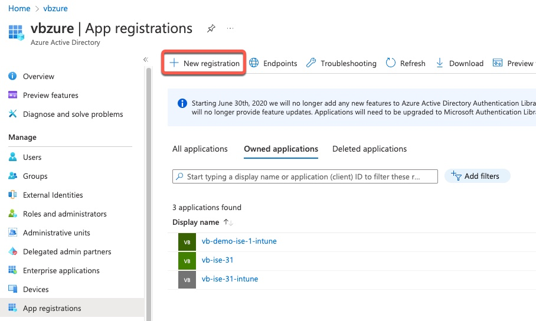
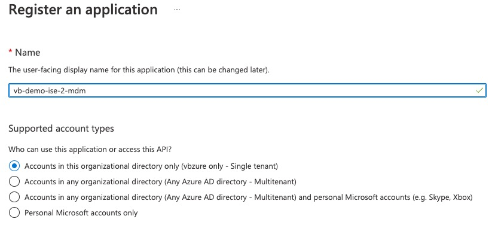
App Registration - Authentication
Since ISE will use its Admin certificate to communicate with Azure AD, we need to export that certificate. We don't need to export the private key. Each PSN communicates to Azure AD independently. If those nodes use individual certificates, they all need to be exported.
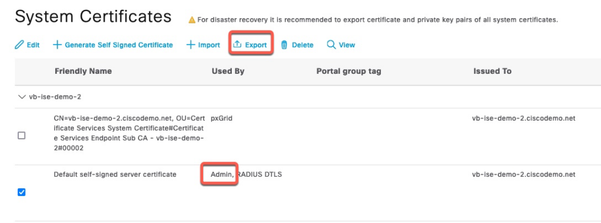
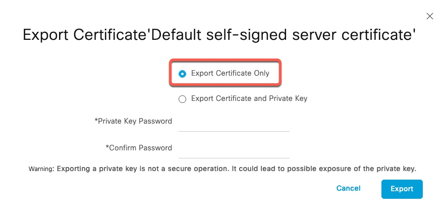
We now import that certificate under Certificates & secrets Tab
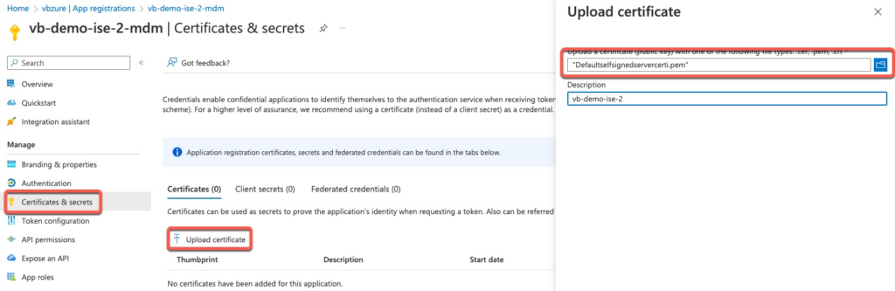
App Registration - Permissions
This screenshot shows what permissions are required for ISE from Azure AD. Note that some permissions are Delegated and some are Application.
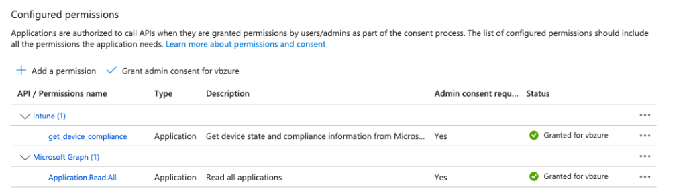
When the App is initially registered, it only has the permission shown on the screenshot below. We click Add Permission to start.
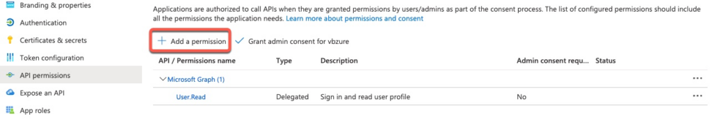
The first permission we're adding is get_device_compliance under Intune. We select Intune category
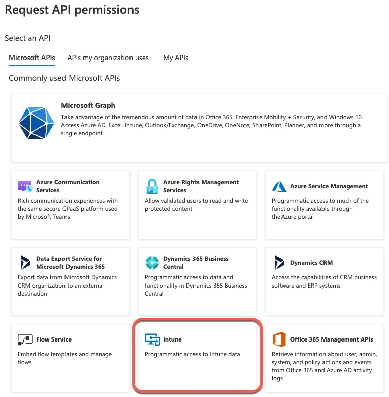
Then we select Application
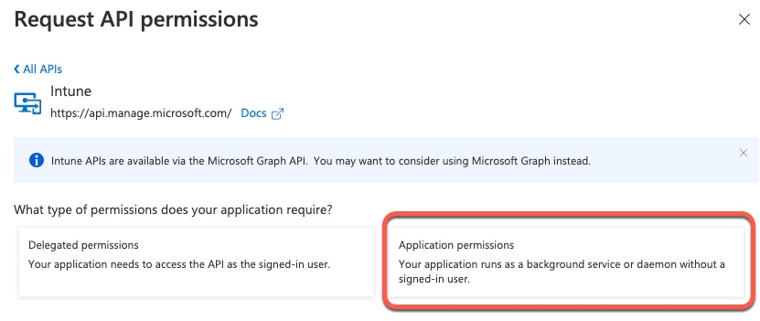
Finally, we select the permission we need
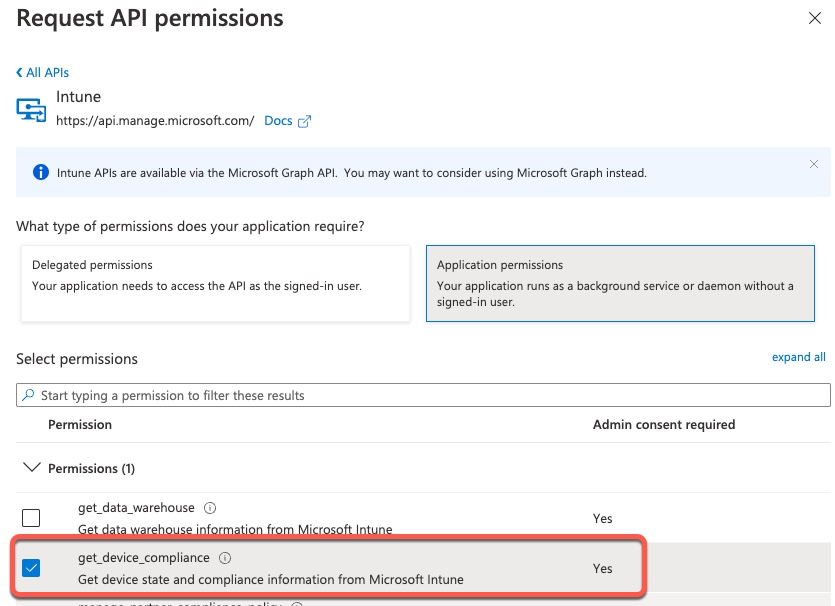
Next, we move on to Microsoft Graph permissions.
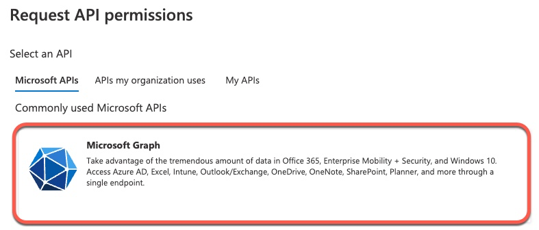
Microsoft Graph has a lot of different permissions and we can use the search box to limit our list
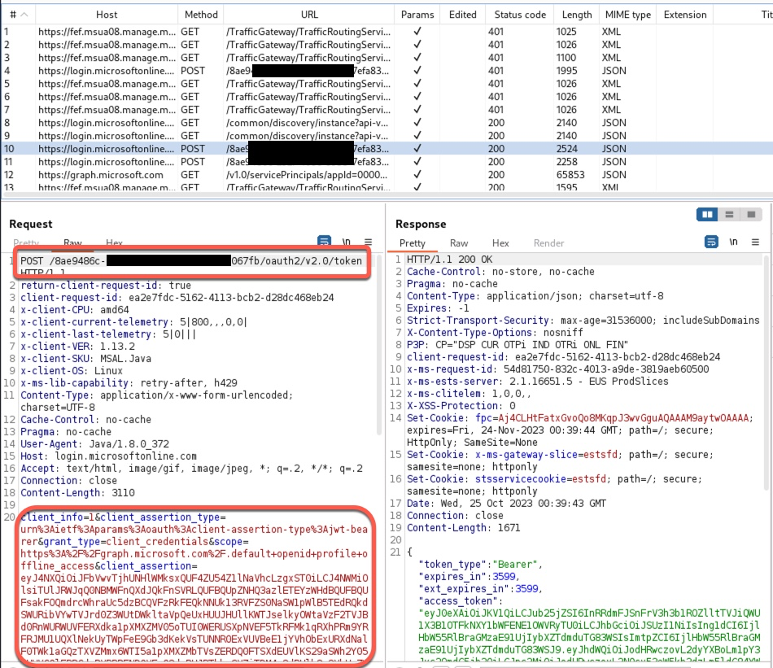
Once all the permissions are added, we need to click Grant admin consent button.
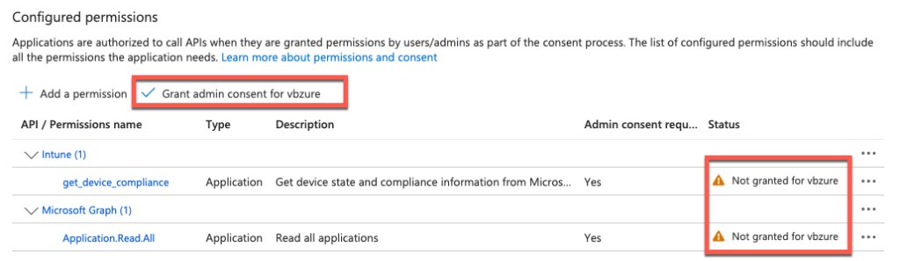
Once the consent is granted, permissions will look like at the top of this section.
App Registration - Parameters
Next we need to note down Application (client) ID from Overview tab that we will use in ISE.
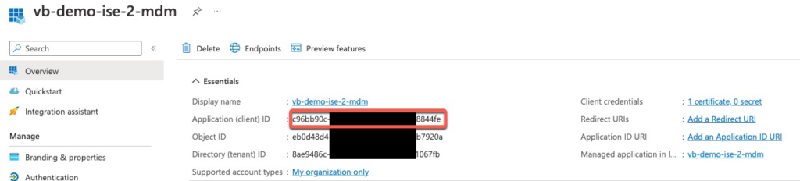
Next, client on Endpoints and note down OAuth 2.0 token endpoint (v2)
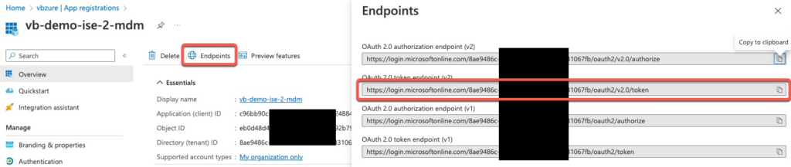
ISE MDM Configuration
Trusted CA Certificates
The following two certificates need to be selected for Infrastructure
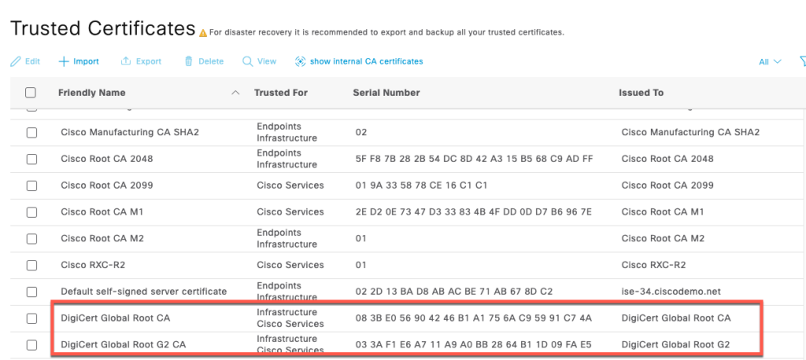
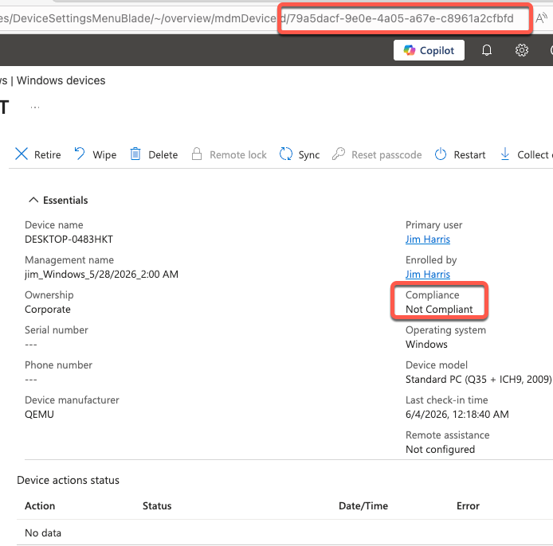
MDM Configuration
Now, we navigate to Administration | External MDM and add a new server
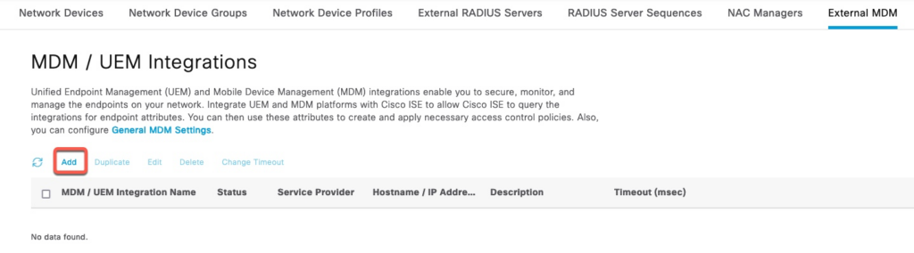
The fields are filled out as follows:
- Server Type: Mobile Device Manager
- Authentication Type: OAuth - Client Credentials
- Auto Discovery: Yes
- Auto Discovery URL: https://graph.microsoft.com
- Client ID: copy value from Application (Client ID) value from previous section
- Token Issuing URL: copy value taken from the Endpoints section above
- Token Audience: should already default to https://api.manage.microsoft.com//.default.
- Note. Prior to version 3.3, 3.1 P8 and 3.2 P4, this value is set to https://api.manage.microsoft.com/
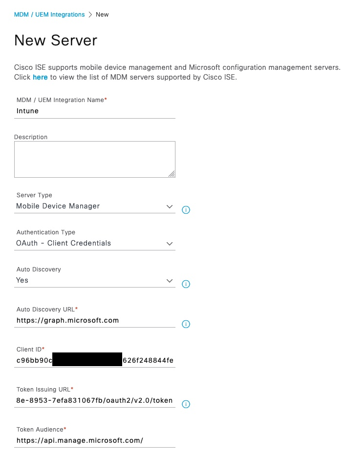
Once the information is filled out, click Test Connection button.
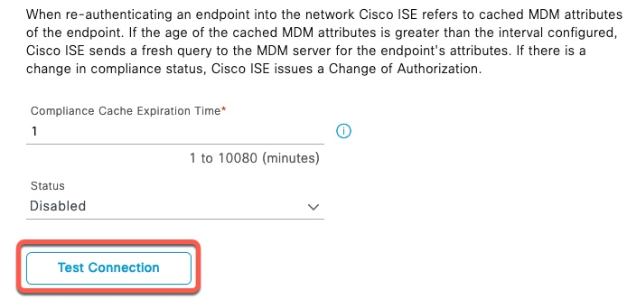
If all the values are correct, you should see a message about which version of ISE MDM API is supported. It should be Version 3.
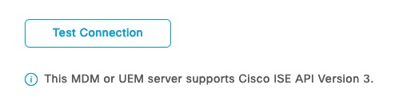
Set the Status to Enabled and Save configuration.
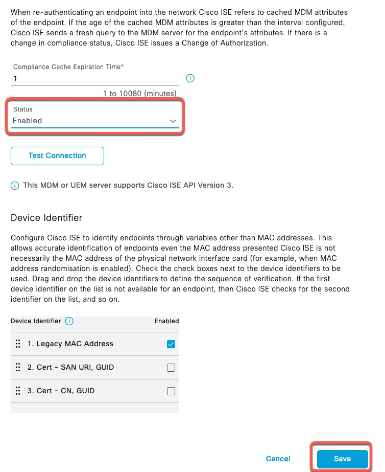
MDM Lookup Attribute
With ISE MDM API Version 1 and 2, ISE supports lookups only using MAC Address. Version 3 also supports this method, but it is considered Legacy.
When creating the policy, we don't reference which lookup method ISE will utilize. It is configured in MDM Server configuration as shown above.
Our authorization policy, only needs to reference MDM attributes and ISE will perform the lookup in the background.
We can see that the lookup was successful using the MAC address (Legacy)
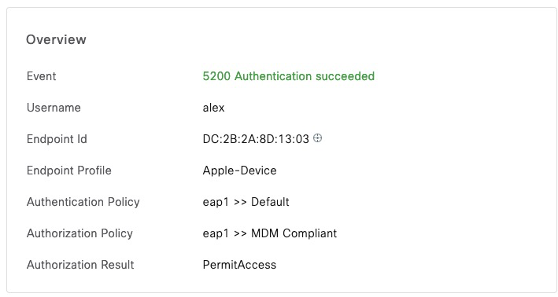
We can also see the attributes that ISE retrieved from Intune in Context Visibility.
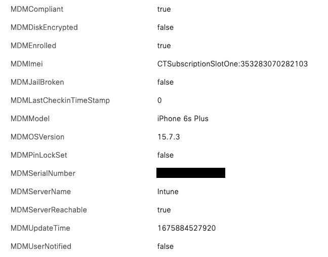
MAC Address lookups have a couple of drawbacks. One major one is that many mobile devices and even Windows have the ability to randomize MAC addresses. That setting is enabled by default on mobile devices. These devices never update Intune with this random address, so the lookups based on MAC address will fail.
Intune is one of MDM vendors that support lookup using device identifies instead of MAC addresses. In Intune, this device identifier is stored in {{DeviceID}} attribute. We discuss how to provision this attribute to endpoints further down in this document.
ISE can retrieve this value from either CN or Subject Alternate Name:URI attributes.
The value of these attributes have to be in a specific format. ISE expects it to be ID:<STRING>:GUID:<VALUE>. STRING can be any combination of letters and <SPACE>. Intune integration documentation uses Microsoft Endpoint Manager in place of <STRING>. <VALUE> is expected to be in GUID format supplied in the certificate by Intune using {{DeviceID}} variable.
ID and GUID strings are case sensitive
Note that if you attempt to use ID:Microsoft Endpoint Manager:GUID:{{DeviceID}} in the CN field, the configuration will fail because the total length of that string is more than 64 characters which is too long for CN. Instead, you can use ID:Intune:GUID:{{DeviceID}} or ID:MS:GUID:{{DeviceID}}
The following screenshot shows how to enable ISE to utilize values from the certificate to perform look ups using device identifiers.
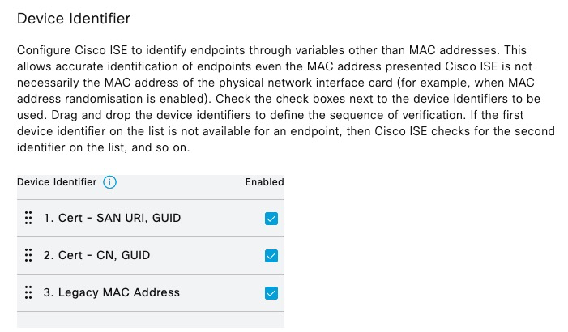
On the following screenshot, we can see that we hit the correct policy despite using a random MAC address. Addresses with the section digit in the first octet being 2, 6, A or E are random.
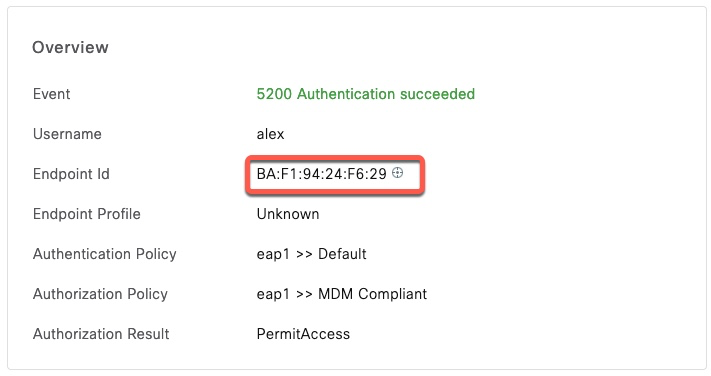
Endpoint Configuration
In this section, we'll go over some essential configuration elements of Microsoft Endpoint Manager as it relates to ISE integration. This is not a complete setup guide for it.
Viewing Information
This screenshot shows Device Overview screen with a summary of all devices. Typical production deployments will show hundreds if not thousands of endpoints
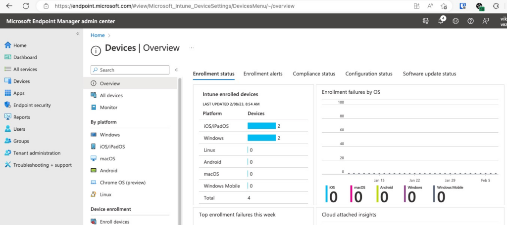
Clicking on iOS tab brings us a more detailed view of all Apple devices enrolled with Intune.
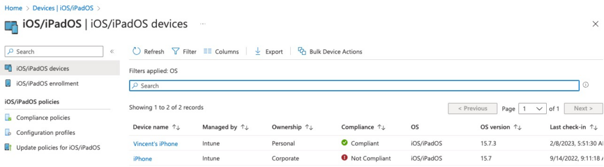
Clicking on individual devices brings us to a detail information screen of that device with many tabs
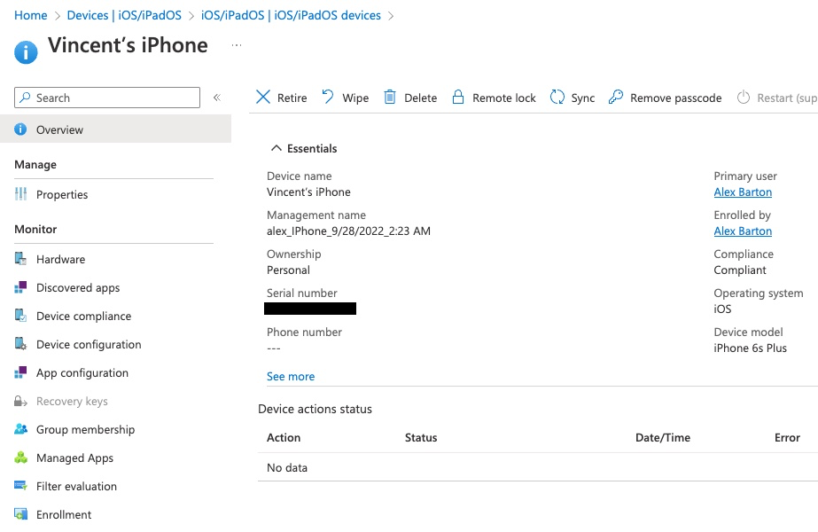
Device configuration tab shows what configuration was pushed to the device from Intune. Intune uses Configuration Profiles for this purpose and the list below shows all profiles that are applied to this device.
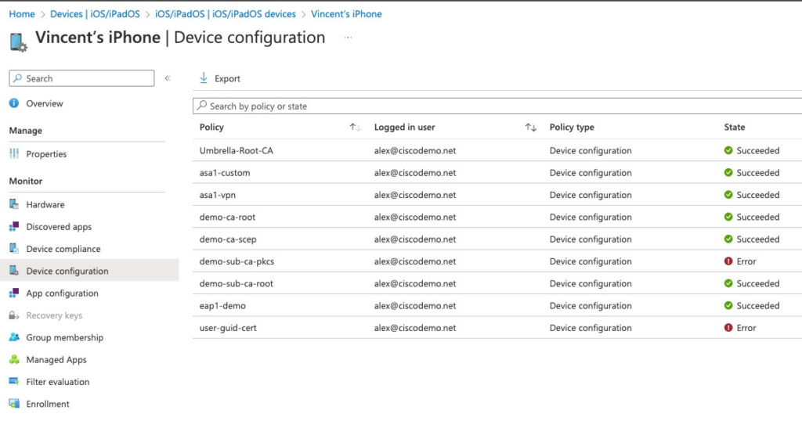
Configuration Profiles
To create new profiles, we navigate to Device | <Device Type> | Configuration profiles. In this example, we're creating iOS profile.
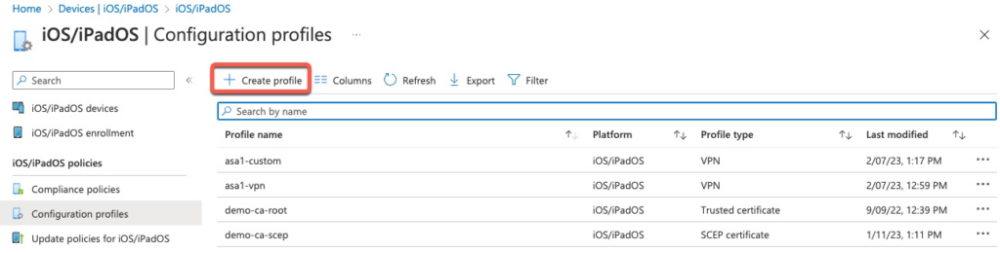
iOS - Trusted Certificate
On the new profile screen, we can see many available templates. It is also possible to create a customer profile using XML, but that's out of scope for this document.
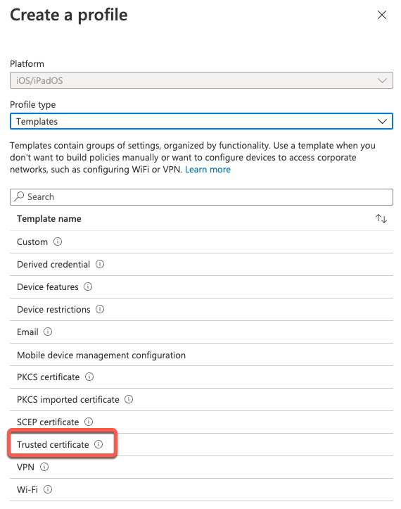
On the next screen we give a name to this profile
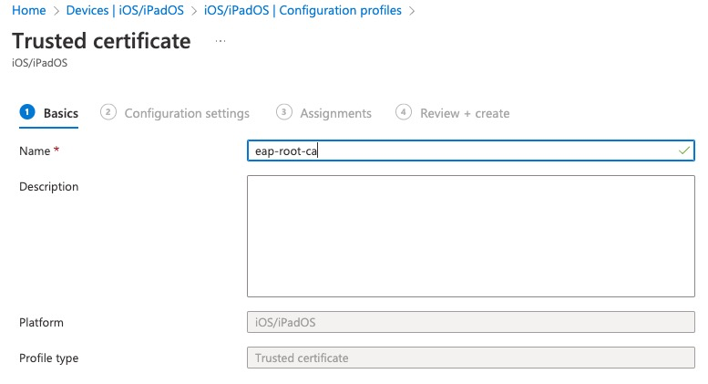
Upload a Root CA file
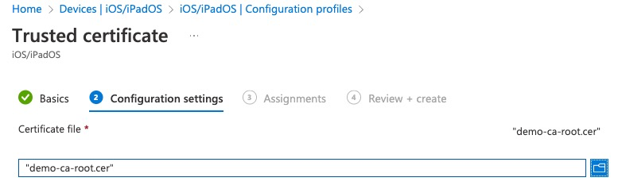
The final and important step is to assign this profile to Users or Devices. In this example, we're assigning to a user group in Azure AD.
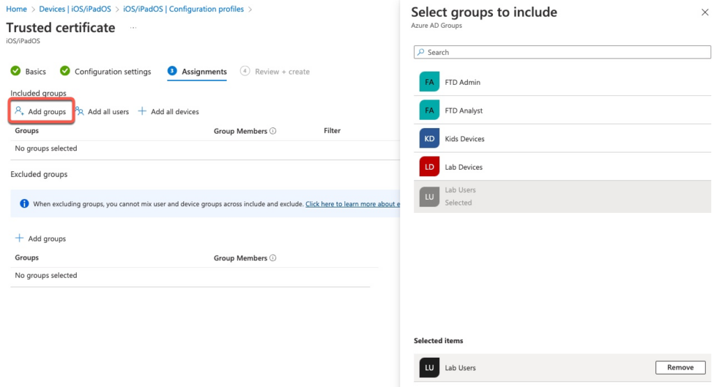
If we're doing quick lab testing, we can simply assign this profile to all devices and/or all users.
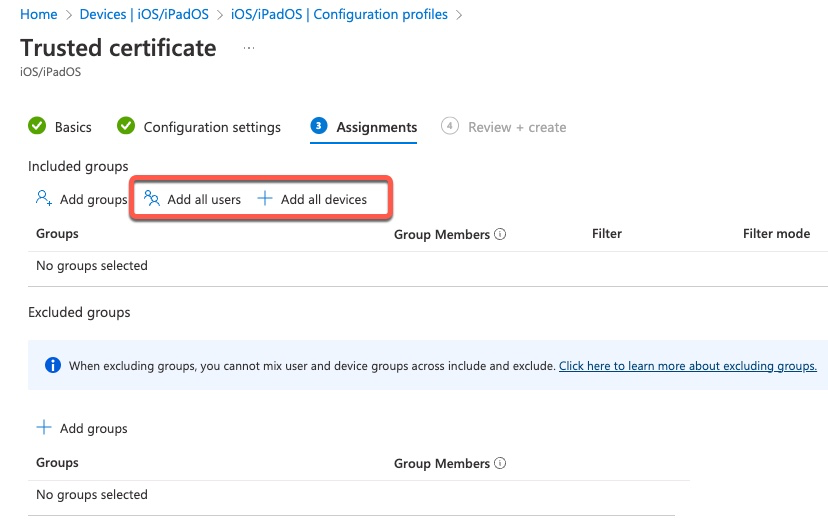
Note that amongst other things, Intune supports dynamic groups and it is possible to assign profile to all iPad for example. That's out of the scope of this document.
iOS Client Certificate - SCEP
Intune supports two methods to provision client certificates. The first method we will look at is SCEP.
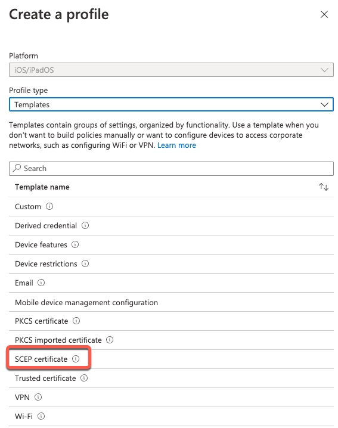
This screenshot shows the entire default configuration screen. We will go section by section through all settings
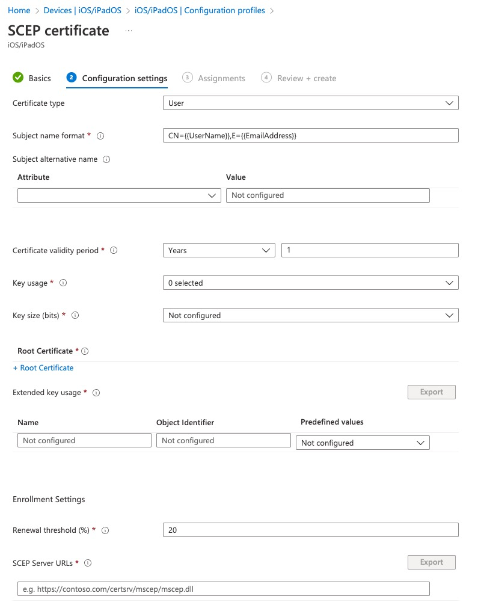
The certificate can be provision at User or Device level. When we use device type, we cannot reference any user attributes such as Username or e-mail address.
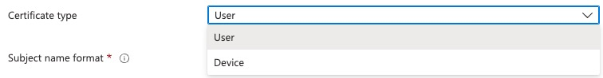
Subject name format lets us customize the contents of the subject line of the certificates. Note that Intune controls the content of this and the subject alternate name. The CA where this request is sent to must be configured to allow any subject line requested by Intune.
We're able to use variables to populate this field. The full list of supported variables is available here: http://go.microsoft.com/fwlink/?LinkId=2027630
This screenshot shows our required MDM field in Subject Alternative Name.
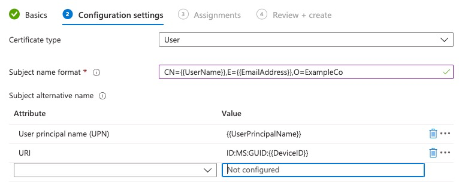
Here, the MDM field is in Common Name (CN)
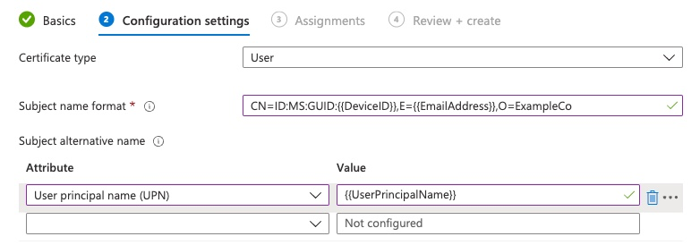
Although Intune has the fields for Validity Period, Key Usage and Enhanced Key Usage, those values are typically ignored by the CAs and they're populated by the template configured on the CA server.
On this screen, we also choose the Root CA of the CA server.
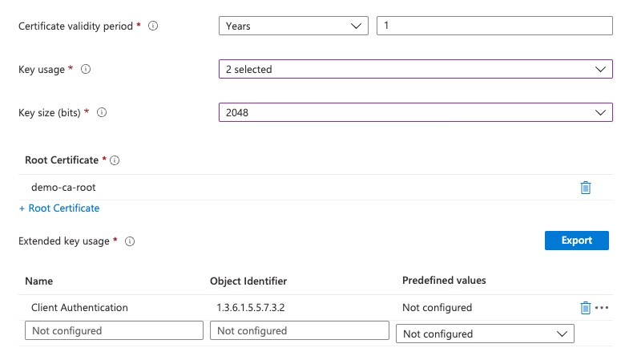
The last setting is specifies the URL of the SCEP server. Note that the device must be able to reach this server during enrollment. In the lab used for this document, this internal URL is accessible.
For production deployments, customers typically hide this URL behind Azure AD App Proxy that only allows enrolling devices to reach it. This is outside of the scope of this document.
Some customer utilize external CA vendors such as Entrust or Sectigo which themselves provide a SCEP URL.
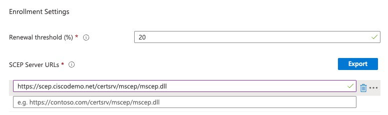
iOS Client Certificate - PKCS
This method of provisioning client certificates involves running Microsoft provided Certificate Connector software to serve as a proxy between Internal CA servers and Intune.
The following two screenshots show the status of this connector software.
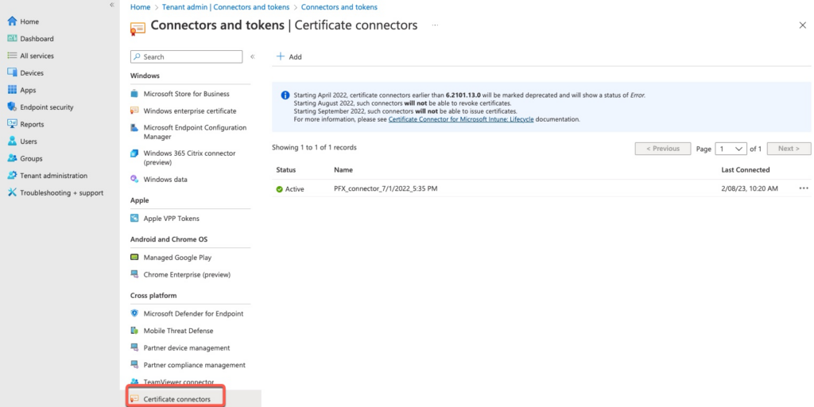
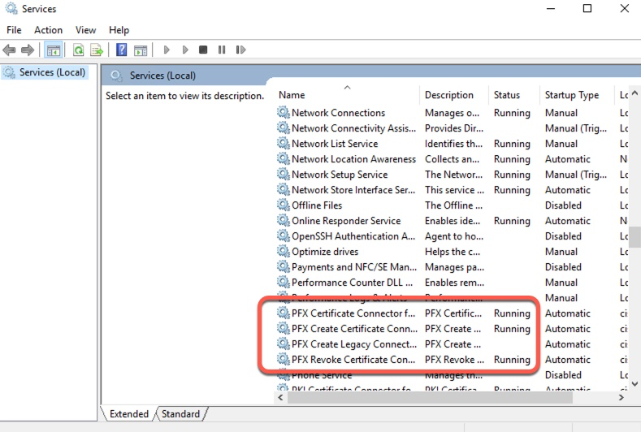
From create profile screen, we select PKCS certificate
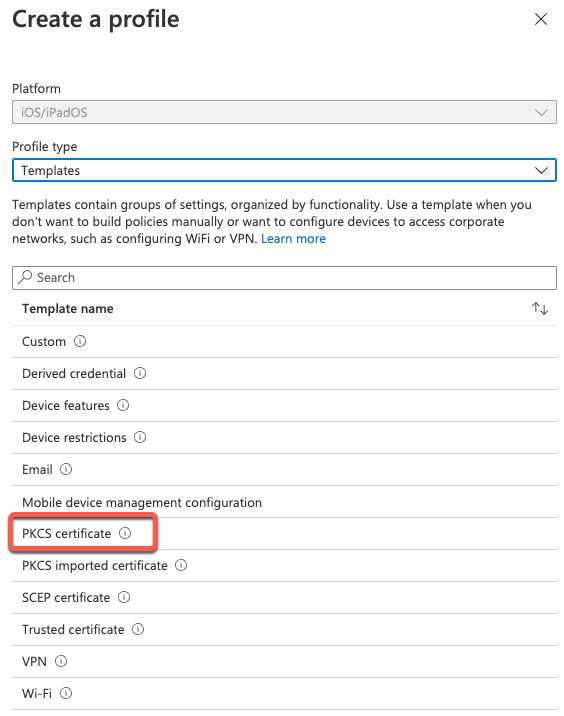
Certificate Connector uses MS-RPC to communicate with the CA using a service account. This service account is used to authenticate to the MS CA Server internally.
On this screen, we fill out the fields as follows:
- Certification authority: FQDN of the Windows Server running MS CA
- Certification authority name: logical name of the CA that can be seen in Certificate Authority tool.
- Certificate template name: MS CA Template that Intune will use to request this certificate
The rest of the fields are the same as using SCEP.
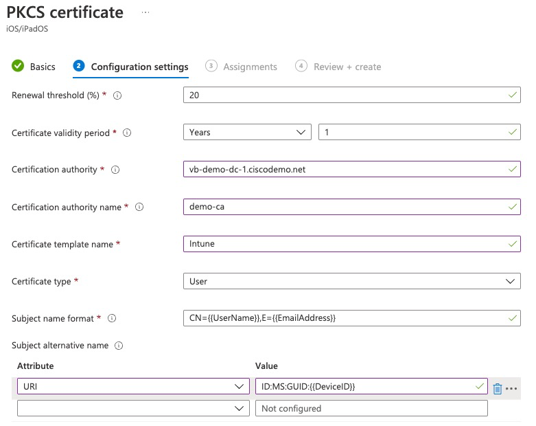
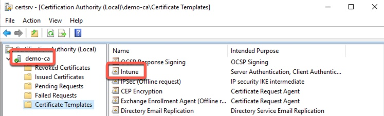
Windows Certificates
Intune has similar profiles for Windows.
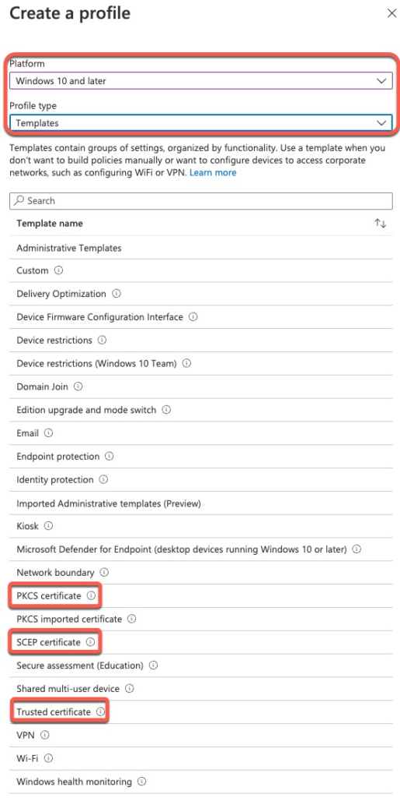
For Windows, Certificate Type attribute control whether the certificate is placed in the Machine or User stores.
Note that if you use Machine and User authentication for 802.1x. Both User and Machine certificates need to be provisioned.
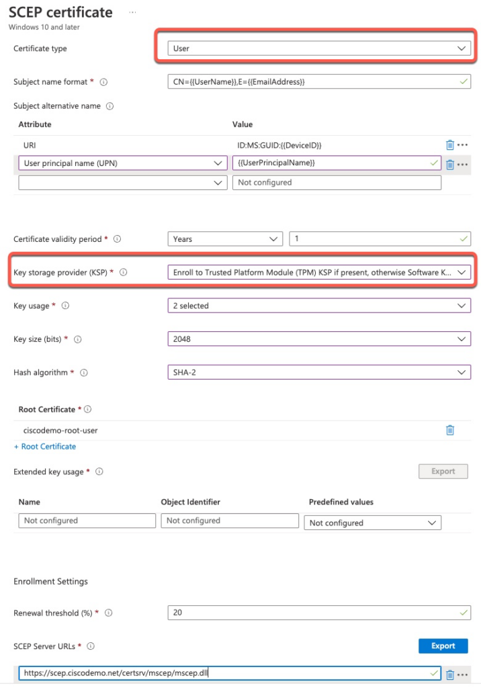
iOS Wi-Fi Profile
This screenshot shows Wi-Fi configuration settings for an iOS device using EAP-TLS. We must select the Root CA that issued the EAP certificate to ISE and the client certificate profile.
iOS Secure Client VPN Profile
Unlike WiFi authentication, Secure Client (aka Anyconnect) endpoint certificate is never sent to Cisco ISE.
When certificate authentication is used, that certificate is validated by the Secure Firewall (aka ASA) and only selected field from the certificate is sent to ISE. There are also many customers who use Username and Password authentication for VPN where a client certificate is not used at all.
For VPN integration with Intune, Secure Client utilizes a custom attribute containing the GUID of the iOS device. This attribute is sent to the Secure Firewall during VPN establishment and it is sent along to ISE via mdm-tlv attributes. See troubleshooting section below for examples.
Microsoft makes it very simple to add this attribute to the VPN profile sent to iOS devices.
To create a VPN profile, select VPN Template
In Configuration settings, select Cisco Anyconnect and simply check off the I agree checkbox under NAC section
Windows Wi-Fi Profile
When configuring Wi-Fi on Windows manually or through GPO, the actual Wi-Fi configuration does not contain the Root CA certificate. Instead, we need to check which Root CA we trust. This setting on the Intune Wi-Fi profile controls those checkboxes.
This screenshot shows those check boxes for reference.
Windows Wi-Fi profiles in Intune require us to specify the client certificate. Intune does not fundamentally change how Wi-Fi is configured on the client and Windows Wi-Fi configuration does not include certificates. Instead, Windows will go into Machine or User store to retrieve the correct certificate.
The second setting is even more confusing. This setting controls the Issuing CA from which the 802.1x supplicant will search for certificates. In other words, it controls the client certificate filter on the Windows PC. For example, if we have a hierarchy of Root CA->Sub CA->Client Cert, we specify Sub CA in that field, not Root.
This screenshot is a reference to what setting the second field controls.
Device Verification
iOS
In this section, we'll go over some iOS screens to validate that the endpoint profiles are successfully deployed to the device.
MDM-installed profiles are found under VPN & Device Management in General settings
Once there, we click on the Management Profile
On the first screen, we can see the summary of what the profile includes. We can click on More Details to get profile contents.
On this screen, we can see the Wi-Fi network that was provisioned.
The screen shows some general parameters of the SSID, but no authentication details.
As we scroll down, we can see certificates. Note that when using SCEP with Intune, the mobile device will end up with a separate certificate for each Intune Configuration Profile that the certificate is associated with.
In this screen, we can see that the device has 4 certificates. One for SCEP certificate profile, two from two VPN profiles and finally one more from the Wi-Fi profile.
When using PKCS integration, the mobile device will still show multiple certificate entries, but they all contain the same certificate.
To tell whether the certificates are the same or multiple, you can reference the Serial number of each certifcate.
We can click into each certificate, we can see the details.
Here we can see the Common Name (CN) of the certificate
And here, we can see the GUID value in the URI field.
Windows 10
This screenshot shows the Machine certificate
And this is the User certificate.
Windows 10 does not have the GUI to show wireless configuration. However, we can export the configuration using netsh wlan export profile command. This command exports the Wi-Fi configuration to an XML file.
Viewing this file, we can see that the supplicant is configured for Machine or User authentication, we have the trusted Root CA enabled and the client certificate filter is set.
Troubleshooting
Python Test Tool
I create a tool that simulates ISE authentication to Intune as well as the common lookups that ISE executes in Intune.
You can get the the tool at https://github.com/vbobrov/iseutils
Example API Results
Compliant
In Grace Period
When endpoint is In Grace Period, ISE API Returns Compliant
In this example, we can see that the endpoint is In grace period for compliance
The API result for that endpoint still shows Compliant status
<?xml version="1.0" ?>
<ise_api xmlns:i="http://www.w3.org/2001/XMLSchema-instance" xmlns="http://schemas.datacontract.org/2004/07/Microsoft.Intune.ResourceAccess.ComplianceRetrievalService.Model">
<name>attributes</name>
<api_version>3</api_version>
<deviceList>
<device>
<guid>79a5dacf-9e0e-4a05-a67e-c8961a2cfbfd</guid>
<macaddress>009337202470</macaddress>
<Attributes>
<guid>79a5dacf-9e0e-4a05-a67e-c8961a2cfbfd</guid>
<macaddress>009337202470</macaddress>
<register_status>true</register_status>
<Compliance>
<status>true</status>
</Compliance>
</Attributes>
</device>
</deviceList>
</ise_api>Compliant
<?xml version="1.0" ?>
<ise_api xmlns:i="http://www.w3.org/2001/XMLSchema-instance" xmlns="http://schemas.datacontract.org/2004/07/Microsoft.Intune.ResourceAccess.ComplianceRetrievalService.Model">
<name>attributes</name>
<api_version>3</api_version>
<deviceList>
<device>
<guid>79a5dacf-9e0e-4a05-a67e-c8961a2cfbfd</guid>
<macaddress>009337202470</macaddress>
<Attributes>
<guid>79a5dacf-9e0e-4a05-a67e-c8961a2cfbfd</guid>
<macaddress>009337202470</macaddress>
<register_status>true</register_status>
<Compliance>
<status>true</status>
</Compliance>
</Attributes>
</device>
</deviceList>
</ise_api>Non-Compliant
<?xml version="1.0" ?>
<ise_api xmlns:i="http://www.w3.org/2001/XMLSchema-instance" xmlns="http://schemas.datacontract.org/2004/07/Microsoft.Intune.ResourceAccess.ComplianceRetrievalService.Model">
<name>attributes</name>
<api_version>3</api_version>
<deviceList>
<device>
<guid>79a5dacf-9e0e-4a05-a67e-c8961a2cfbfd</guid>
<macaddress>009337202470</macaddress>
<Attributes>
<guid>79a5dacf-9e0e-4a05-a67e-c8961a2cfbfd</guid>
<macaddress>009337202470</macaddress>
<register_status>true</register_status>
<Compliance>
<status>false</status>
</Compliance>
</Attributes>
</device>
</deviceList>
</ise_api>Intune API Technical Details
Intune API endpoints used for retrieval of MDM information use JWT Bearer token authentication. This token is valid for only an hour.
To retrieve this token, ISE needs to authenticate to the Token Issuing API endpoint for graph.microsoft.com and api.manage.microsoft.com using the certificate and the private key of the Primary Admin node certificate. Please check the python script linked above for more detail.
Notably, in a distributed deployment, these logins to the Token Issuing endpoint are only executed on the Primary Admin node. Once the JWT Bearer token is acquired, it is distributed to the other nodes in the deployed via normal ISE replication.
Primary Admin node refreshes the token about once an hour.
All Admin and Policy nodes in the deployment poll the NAC API endpoint every 5 minutes. If that endpoint returns an error, ISE will mark Intune as unreachable and will not send any requests to it until the 5-minute polls return 200 Success. See the next section for example log events.
Cisco ISE Logs
In this section, we will go over some example debug outputs from ISE.
To see detailed MDM connection logs, we need to increase external-mdm debugging to TRACE level.
MDM logs are save to ise-psc.log file which can be download from Download Logs.
In the following examples, we're looking at log outputs from several scenarios.
In the first example, we have an endpoint that's configured with the GUID attributed in the SAN URI field, but ISE is configured only for RADIUS_MAC in mdmDeviceIdentifier. This is the settings in MDM Server configuration. At the end of the output, we can see that ISE will perform MAC Address lookup.
2023-02-08 14:23:40,882 DEBUG [Thread-63108][[]] cisco.cpm.mdm.pip.MdmPartnerPIPHandler -::::- For the MDM Server -'Intune', the admin configured mdmDeviceIdentifier Source value is -'RADIUS_MAC'
2023-02-08 14:23:40,882 DEBUG [Thread-63108][[]] cisco.cpm.mdm.pip.MdmPartnerPIPHandler -::::- SESSION IS NOT NULL & CERTIFICATE.CN Field value is - 'alex' and CERTIFICATE.SAN DNS Field value is - 'null' and CERTIFICATE.CERT_SANURI_KEY Field value is -'ID:MS:ee9d3792-6859-4b71-93aa-56aba42581c5'
2023-02-08 14:23:40,882 DEBUG [Thread-63108][[]] cisco.cpm.mdm.pip.MdmPartnerPIPHandler -::::- Actual check of CERTIFICATE.CN Field value is - 'alex' and CERTIFICATE.SAN DNS Field value is - 'null' and CERTIFICATE.CERT_SANURI_KEY Field value is -'ID:MS:ee9d3792-6859-4b71-93aa-56aba42581c5'
2023-02-08 14:23:40,882 DEBUG [Thread-63108][[]] cisco.cpm.mdm.pip.MdmPartnerPIPHandler -::::- ise db/cache Configured device Identifier source order values are : RADIUS_MAC
2023-02-08 14:23:40,882 DEBUG [Thread-63108][[]] cisco.cpm.mdm.pip.MdmPartnerPIPHandler -::::- Checking the current deviceIdentifier value : RADIUS_MAC
2023-02-08 14:23:40,882 INFO [Thread-63108][[]] cisco.cpm.mdm.pip.MdmPartnerPIPHandler -::::- The value for the deviceIdentifier type of 'MAC' is - 'DC:2B:2A:8D:13:03'In this example, we see an endpoint connecting with a random MAC address BA:F1:94:24:F6:29 and MDM is configured for RADIUS_MAC only. The output shows that ISE will call Intune V2 api endpoint. This endpoint is in /StatelessNacService path.
At the end of the output, XML result from Intune is empty, so ISE will treat it as device not registered.
2023-02-08 14:55:32,091 DEBUG [Thread-63856][[]] cisco.cpm.mdm.pip.MdmPartnerPIPHandler -::::- Actual check of CERTIFICATE.CN Field value is - 'alex' and CERTIFICATE.SAN DNS Field value is - 'null' and CERTIFICATE.CERT_SANURI_KEY Field value is -'null'
2023-02-08 14:55:32,091 DEBUG [Thread-63856][[]] cisco.cpm.mdm.pip.MdmPartnerPIPHandler -::::- ise db/cache Configured device Identifier source order values are : RADIUS_MAC
2023-02-08 14:55:32,091 DEBUG [Thread-63856][[]] cisco.cpm.mdm.pip.MdmPartnerPIPHandler -::::- Checking the current deviceIdentifier value : RADIUS_MAC
2023-02-08 14:55:32,091 INFO [Thread-63856][[]] cisco.cpm.mdm.pip.MdmPartnerPIPHandler -::::- The value for the deviceIdentifier type of 'MAC' is - 'BA:F1:94:24:F6:29'
2023-02-08 14:55:32,095 DEBUG [Thread-63856][[]] cisco.cpm.mdm.api.MdmBaseApi -::::- Mdmclient - MdmDevicesGetApiHandler value is : devIdentifierType -MAC, devIdentifierTypeVal-BA:F1:94:24:F6:29,devIdenVal- null, isValidIdValue- false
2023-02-08 14:55:32,095 INFO [Thread-63856][[]] cisco.cpm.mdm.api.MdmBaseApi -::::- setting the Intune V2 api path for VPN and macaddress flow
2023-02-08 14:55:32,097 DEBUG [Thread-63856][[]] cisco.cpm.mdm.pip.MdmServerInfo -::::- mdm.microsoft.intune.service.endpoint.name value is: NACAPIService
2023-02-08 14:55:32,097 DEBUG [Thread-63856][[]] cisco.cpm.mdm.pip.MdmServerInfo -::::- mdm.microsoft.intune.service.endpoint.namev3 value is: ComplianceRetrievalService
2023-02-08 14:55:32,097 DEBUG [Thread-63856][[]] cisco.cpm.mdm.pip.MdmServerInfo -::::- mdm.microsoft.intune.DeviceCompliancev2ApiPath value is: /StatelessNacService/ciscodeviceinfo/mdm/api
2023-02-08 14:55:32,097 DEBUG [Thread-63856][[]] cisco.cpm.mdm.api.MdmBaseApi -::::- compliance check URL --/StatelessNacService/ciscodeviceinfo/mdm/api/devices/?paging=0&querycriteria=macaddress&value=BAF19424F629&filter=all
2023-02-08 14:55:32,097 INFO [Thread-63856][[]] cisco.cpm.mdm.util.MdmRESTClient -::::- GET: MDM Server URL: https://fef.msua08.manage.microsoft.com/StatelessNacService/ciscodeviceinfo/mdm/api/devices/?paging=0&querycriteria=macaddress&value=BAF19424F629&filter=all
2023-02-08 14:55:32,097 DEBUG [Thread-63856][[]] cisco.cpm.mdm.util.MdmRESTClient -::::- Proxy Config in request = [,null,-1,nullnullnull]
2023-02-08 14:55:32,285 INFO [Thread-63856][[]] cisco.cpm.mdm.util.MdmRESTClient -::::- MDM Server Response Code: 200
2023-02-08 14:55:32,285 TRACE [Thread-63856][[]] cisco.cpm.mdm.util.MdmRESTClient -::::-
Response data received from the MDM server : <?xml version="1.0"?><ise_api> <name>attributes</name> <api_version>2</api_version> <paging_info>0</paging_info> <deviceList /></ise_api>This example shows a successful lookup by MAC address. We can see that we received the full XML result from Intune.
2023-02-08 14:56:36,838 INFO [MdmEventHandler-62-thread-2][[]] cisco.cpm.mdm.util.MdmRESTClient -::::- GET: MDM Server URL: https://fef.msua08.manage.microsoft.com/StatelessNacService/ciscodeviceinfo/mdm/api/devices/?paging=0&querycriteria=macaddress&value=DC2B2A8D1303&filter=all
2023-02-08 14:56:36,944 TRACE [MdmEventHandler-62-thread-2][[]] cisco.cpm.mdm.util.MdmRESTClient -::::-
Response data received from the MDM server : <?xml version="1.0"?><ise_api> <name>attributes</name> <api_version>2</api_version> <paging_info>0</paging_info> <deviceList> <device> <macaddress>dc2b2a8d1303</macaddress> <attributes> <register_status>true</register_status> <compliance> <status>true</status> </compliance> <pin_lock_on>false</pin_lock_on> <model>iPhone 6s Plus</model> <imei>CTSubscriptionSlotOne:353283070282103</imei> <meid>CTSubscriptionSlotOne: 35328307028210</meid> <udid>2bebb8fc9f7c8c9a8eddc9a1684ecfd6cb342d1d</udid> <serial_number>***</serial_number> <os_version>15.7.3</os_version> </attributes> </device> </deviceList></ise_api>
In this example, ISE is now configured for SAN URI for MDM checking, CERT_SANURI_GUID. Next, we look for the line that shows isValidIdValue is true, meaning that ISE identified a valid GUID in the certificate fields. We can see that ISE uses Intune V3 endpoint at /TrafficGateway.
At the end, we can see that ISE received the response containing device information from Intune
2023-02-08 15:04:15,725 DEBUG [Thread-57108][[]] cisco.cpm.mdm.pip.MdmPartnerPIPHandler -::::- SESSION IS NOT NULL & CERTIFICATE.CN Field value is - 'alex' and CERTIFICATE.SAN DNS Field value is - 'null' and CERTIFICATE.CERT_SANURI_KEY Field value is -'ID:MS:GUID:ee9d3792-6859-4b71-93aa-56aba42581c5'
2023-02-08 15:04:15,725 DEBUG [Thread-57108][[]] cisco.cpm.mdm.pip.MdmPartnerPIPHandler -::::- Actual check of CERTIFICATE.CN Field value is - 'alex' and CERTIFICATE.SAN DNS Field value is - 'null' and CERTIFICATE.CERT_SANURI_KEY Field value is -'ID:MS:GUID:ee9d3792-6859-4b71-93aa-56aba42581c5'
2023-02-08 15:04:15,725 DEBUG [Thread-57108][[]] cisco.cpm.mdm.pip.MdmPartnerPIPHandler -::::- ise db/cache Configured device Identifier source order values are : CERT_SANURI_GUID
2023-02-08 15:04:15,725 DEBUG [Thread-57108][[]] cisco.cpm.mdm.pip.MdmPartnerPIPHandler -::::- Checking the current deviceIdentifier value : CERT_SANURI_GUID
2023-02-08 15:04:15,725 INFO [Thread-57108][[]] cisco.cpm.mdm.pip.MdmPartnerPIPHandler -::::- The value for the deviceIdentifier type of 'SAN_URI' is - 'ID:MS:GUID:ee9d3792-6859-4b71-93aa-56aba42581c5'
2023-02-08 15:04:15,727 DEBUG [Thread-57108][[]] cisco.cpm.mdm.util.MDMUtil -::::- MDM Server ID: and MDM update time:0
2023-02-08 15:04:15,727 DEBUG [Thread-57108][[]] cisco.cpm.mdm.pip.MdmPartnerPIPHandler -::::- mdm server id in getInfoMapForValidDevice:83b7a55b-3806-48e1-a6f6-97ce510544d4
2023-02-08 15:04:15,727 DEBUG [Thread-57108][[]] cisco.cpm.mdm.pip.MdmPartnerPIPHandler -::::- get MacList attrubutes are mac:BA-F1-94-24-F6-29 phoneId:null phoneIdType:UNKNOWN sessionId:ac1f020a000007d063e40001 mdmserverId:83b7a55b-3806-48e1-a6f6-97ce510544d4
2023-02-08 15:04:15,727 DEBUG [Thread-57108][[]] cisco.cpm.mdm.api.MdmBaseApi -::::- Value of 'isValidIdValue' is -true
2023-02-08 15:04:15,727 DEBUG [Thread-57108][[]] cisco.cpm.mdm.api.MdmBaseApi -::::- Mdmclient - MdmDevicesGetApiHandler value is : devIdentifierType -SAN_URI, devIdentifierTypeVal-ID:MS:GUID:ee9d3792-6859-4b71-93aa-56aba42581c5,devIdenVal- ee9d3792-6859-4b71-93aa-56aba42581c5, isValidIdValue- true
2023-02-08 15:04:15,727 DEBUG [Thread-57108][[]] cisco.cpm.mdm.api.MdmBaseApi -::::- compliance check URL --/TrafficGateway/TrafficRoutingService/ResourceAccess/ComplianceRetrievalService/cisco/devices/?paging=0&querycriteria=guid&value=ee9d3792-6859-4b71-93aa-56aba42581c5&filter=all
2023-02-08 15:04:15,727 INFO [Thread-57108][[]] cisco.cpm.mdm.util.MdmRESTClient -::::- GET: MDM Server URL: https://fef.msua08.manage.microsoft.com/TrafficGateway/TrafficRoutingService/ResourceAccess/ComplianceRetrievalService/cisco/devices/?paging=0&querycriteria=guid&value=ee9d3792-6859-4b71-93aa-56aba42581c5&filter=all
2023-02-08 15:04:15,828 TRACE [Thread-57108][[]] cisco.cpm.mdm.util.MdmRESTClient -::::-
Response data received from the MDM server : <ise_api xmlns:i="http://www.w3.org/2001/XMLSchema-instance" xmlns="http://schemas.datacontract.org/2004/07/Microsoft.Intune.ResourceAccess.ComplianceRetrievalService.Model"><name>attributes</name><api_version>3</api_version><deviceList><device><guid>ee9d3792-6859-4b71-93aa-56aba42581c5</guid><Attributes><guid>ee9d3792-6859-4b71-93aa-56aba42581c5</guid><register_status>true</register_status><Compliance><status>true</status></Compliance></Attributes></device></deviceList></ise_api>
This example shows the 5-minute poll that all Admin and Policy nodes execute
2025-09-30 10:41:37,449 DEBUG [Thread-140][[]] cisco.cpm.mdm.util.MdmRESTClient -:::::- QueryType is heartbeatQuery
2025-09-30 10:41:37,449 DEBUG [Thread-140][[]] cisco.cpm.mdm.util.MdmRESTClient -:::::- using httpClient for http query - [parameters={http.socket.timeout=30000, http.connection.timeout=5000}]
2025-09-30 10:41:37,449 INFO [Thread-140][[]] cisco.cpm.mdm.util.MdmRESTClient -:::::- GET: MDM Server URL: https://fef.msua08.manage.microsoft.com/TrafficGateway/TrafficRoutingService/ResourceAccess/ComplianceRetrievalService/ciscoise/mdminfo/?ise_api_version=3
2025-09-30 10:41:37,449 DEBUG [Thread-140][[]] cisco.cpm.mdm.util.MdmRESTClient -:::::- Proxy Config in request = [,null,-1,nullnullnull]
2025-09-30 10:41:37,599 INFO [Thread-140][[]] cisco.cpm.mdm.util.MdmRESTClient -:::::- MDM Server Response Code: 200
2025-09-30 10:41:37,603 TRACE [Thread-140][[]] cisco.cpm.mdm.util.MdmRESTClient -:::::-
Response data received from the MDM server : <?xml version="1.0" encoding="UTF-8"?><ise_api xmlns="http://schemas.datacontract.org/2004/07/Microsoft.Intune.ResourceAccess.ComplianceRetrievalService.Model" xmlns:i="http://www.w3.org/2001/XMLSchema-instance"><name>mdminfo</name><api_version>3</api_version><api_path>/TrafficGateway/TrafficRoutingService/ResourceAccess/ComplianceRetrievalService/cisco</api_path><redirect_url>https://portal.manage.microsoft.com/networkaccesscontrol/index</redirect_url><query_max_size>100</query_max_size><messaging_support>false</messaging_support><vendor>Microsoft</vendor><product_name>Microsoft Intune</product_name><product_version>5.0</product_version></ise_api>
2025-09-30 10:41:37,603 DEBUG [Thread-140][[]] cisco.cpm.mdm.util.MdmRESTClient -:::::- sendGETRequestDom: end HTTP request - connectionsUsed: 1, connectionsAvailable: 199
2025-09-30 10:41:37,603 DEBUG [Thread-140][[]] cisco.cpm.mdm.util.MdmRESTClient -:::::- sendGETRequestDomNonComp: end HTTP request - connectionsUsed: 0, connectionsAvailable: 200
2025-09-30 10:41:37,603 TRACE [Thread-140][[]] cisco.cpm.mdm.apiimpl.MDMVerifyServer -:::::- isMdmSettingsIdNotNull flag Value : true,tryWithV3 : false, isMdmSettingsUpdateRequired : false
2025-09-30 10:41:37,603 DEBUG [Thread-140][[]] cisco.cpm.mdm.scheduler.MDMHeartbeat -:::::- Heartbeat job : ping server - mdm server : Intune reachable. Response received from the MDM server : {"api_uri":"/TrafficGateway/TrafficRoutingService/ResourceAccess/ComplianceRetrievalService/cisco","api_version":"3","redirect_url":"https://portal.manage.microsoft.com/networkaccesscontrol/index","vendorName":"Microsoft","productName":"Microsoft Intune","productVersion":"5.0","queryMaxSize":"100","proxyHost":"","proxyPort":"-1"}This example shows Admin node refreshing the token after about 55 minutes
2025-09-30 10:40:35,634 INFO [DefaultQuartzScheduler_Worker-5][[]] cisco.cpm.mdm.authtoken.MdmAuthTokenRefreshJob -:::::- Executing auth token refresh job for Intune
2025-09-30 10:40:35,634 DEBUG [DefaultQuartzScheduler_Worker-5][[]] cisco.cpm.mdm.authtoken.MdmAzureActiveDirectoryClient -:::::- ClientId - e1c4b91f-XXXXXXXX-3ab4cf4dc013, Token issuance endpoint - https://login.microsoftonline.com/8ae9486c-XXXXXXXX-7efa831067fb/oauth2/v2.0/token, ResourceId/App Id uri - https://api.manage.microsoft.com//.default
2025-09-30 10:40:35,635 INFO [DefaultQuartzScheduler_Worker-5][[]] cpm.infrastructure.certmgmt.remote.CertMgmtFacade -:::::- -:::-CSRFlow-:::- >>>>>>>>>>Inside CertMgmtFacade create<<<<<<<<<<
2025-09-30 10:40:35,650 DEBUG [DefaultQuartzScheduler_Worker-5][[]] cisco.cpm.mdm.authtoken.MdmCertAndKeyUtil -:::::- Certificate Friendly Name -CN=ise.ciscodemo.net#demo-ca#00003
2025-09-30 10:40:35,654 INFO [DefaultQuartzScheduler_Worker-5][[]] cpm.infrastructure.certmgmt.impl.CertificateRequestHandler -:::::- return code from getLocalCertificate() = 0
2025-09-30 10:40:35,662 INFO [DefaultQuartzScheduler_Worker-5][[]] cpm.infrastructure.certmgmt.impl.CertificateRequestHandler -:::::- encryptedPrivateKey length (bytes) = 3434
2025-09-30 10:40:35,676 DEBUG [DefaultQuartzScheduler_Worker-5][[]] cisco.cpm.mdm.authtoken.MdmCertAndKeyUtil -:::::- Result of command invocation:
2025-09-30 10:40:35,695 DEBUG [DefaultQuartzScheduler_Worker-5][[]] cisco.cpm.mdm.authtoken.MdmCertAndKeyUtil -:::::- Result of command invocation:
2025-09-30 10:40:35,695 DEBUG [DefaultQuartzScheduler_Worker-5][[]] cisco.cpm.mdm.authtoken.MdmCertAndKeyUtil -:::::- Successfuly decrypted private key
2025-09-30 10:40:35,696 INFO [DefaultQuartzScheduler_Worker-5][[]] cpm.infrastructure.certmgmt.remote.CertMgmtFacade -:::::- -:::-CSRFlow-:::- >>>>>>>>>>Inside CertMgmtFacade create<<<<<<<<<<
2025-09-30 10:40:36,140 DEBUG [DefaultQuartzScheduler_Worker-5][[]] cisco.cpm.mdm.authtoken.MdmAzureActiveDirectoryClient -:::::- Access token has acquired succesfully from Microsoft Azure.
2025-09-30 10:40:36,145 INFO [DefaultQuartzScheduler_Worker-5][[]] com.cisco.epm.jms.AQMessgeHandler -:::::- Publishing message for event [TxnCommit / commit] and message class[com.cisco.cpm.deployment.replication.ups.UPSChangeSet]
2025-09-30 10:40:36,161 DEBUG [DefaultQuartzScheduler_Worker-5][[]] cisco.cpm.mdm.pip.MdmSettingsNotificationHandler -:::::- add / update mdm server to the local MDM servers cache Intune
2025-09-30 10:40:36,163 INFO [DefaultQuartzScheduler_Worker-5][[]] cisco.cpm.mdm.util.MdmServersCache -:::::- MDM server - Status : Active, mdm server id : 68f3d0c8-7ad2-4dc6-9dff-fc2abde6a330 and mdm server name : Intune
2025-09-30 10:40:36,166 INFO [DefaultQuartzScheduler_Worker-5][[]] cisco.cpm.mdm.authtoken.MdmAuthTokenRefreshScheduler -:::::- Rescheduling(deleting old one and creating new one) auth token refresh job for mdmserver 68f3d0c8-7ad2-4dc6-9dff-fc2abde6a330.
2025-09-30 10:40:36,166 INFO [DefaultQuartzScheduler_Worker-5][[]] cisco.cpm.mdm.authtoken.MdmAuthTokenRefreshScheduler -:::::- Deleting auth token refresh job for mdmserver 68f3d0c8-7ad2-4dc6-9dff-fc2abde6a330.
2025-09-30 10:40:36,166 INFO [DefaultQuartzScheduler_Worker-5][[]] cisco.cpm.mdm.authtoken.MdmAuthTokenRefreshScheduler -:::::- Scheduling auth token refresh job for mdmserver 68f3d0c8-7ad2-4dc6-9dff-fc2abde6a330.
VPN GUID Verification
When iOS Secure Client connects to the firewall it transmits the unique identifier amongst other DAP attributes.
Here's an example. We can see that Intune programs this identifier in the same format as what we put in WiFi certificates.
This output is enabled with debug dap trace 255.
endpoint.anyconnect.clientversion = "5.0.05207";
endpoint.anyconnect.platform = "apple-ios";
endpoint.anyconnect.devicetype = "iPhone8,2";
endpoint.anyconnect.platformversion = "15.8";
endpoint.anyconnect.deviceuniqueid = "ID:Microsoft Endpoint Manager:GUID:d3dfa832-6276-4fb0-a63d-44e2331fedeb";
endpoint.anyconnect.deviceuniqueidglobal = "ID:Microsoft Endpoint Manager:GUID:d3dfa832-6276-4fb0-a63d-44e2331fedeb";
endpoint.anyconnect.phoneid = "unknown";
endpoint.anyconnect.useragent = "AnyConnect AppleSSLVPN_Darwin_ARM (iPhone) 5.0.05207";
endpoint.anyconnect.session_token_security = "true";In ISE, this information can be seen in Live Log details page
OAuth Decoding
Sometimes ISE will fail to authorize itself to Azure AD. This will result in error 401 in ISE logs and authentication failure in Azure AD sign in logs. Here's an example screenshot from Azure AD
This typically means that the certificate that ISE is sending to Azure AD is not the one that's added in the Azure AD App. There is a bug filed on this failure, but it couldn't be reproduced: https://bst.cloudapps.cisco.com/bugsearch/bug/CSCvo45411
Neither ISE nor Azure AD report which certificate is being sent. It is possible to identify which certificate ISE is using by decrypting traffic between ISE and Azure AD.
In this example, I'm using Burpsuite to act as a proxy for ISE, allowing us to see inside the OAuth process
Certificate authorization happens with Token issuing URL as shown on the screenshot below.
The HTTP Post request contains client_assertion field that can be decoded using any online JWT token decode tools.
In decoded output, we can see the certificate as well as the thumbprint.
The thumbprint is base64 encoded and we can use online tools to convert it to hex.
If we view this certificate in ISE, the thumbprint should match